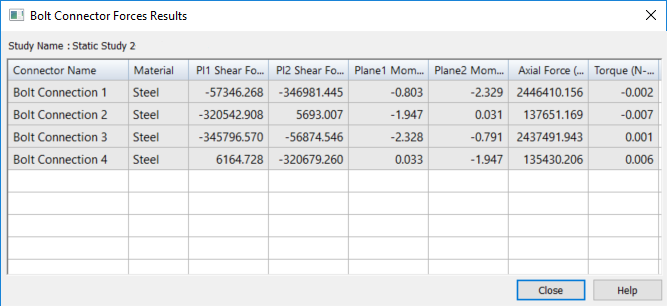
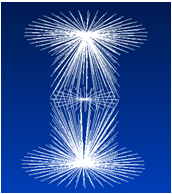

Bolt connector simulation results
For practice using bolt connectors, try the Tutorial: Using bolted connections.
Reviewing the stress results for bolt connectors
You can review the stresses—shear, moment, axial force, and torque—applied on bolted connectors to determine the safety of different types of fasteners used in the model.
-
To generate the results, you must select the Force check box under Results Options in the Create Study dialog box when you define the study. You also can modify the study to select this option.
-
To review the calculated stress results in the Simulation Results environment, double-click the Bolt Connector Forces node. The stress results data is displayed in table format.
Example:This table shows that four separate bolt connectors (Bolt Connection 1, Bolt Connection 2, Bolt Connection 3, Bolt Connection 4) were created using the Bolt command with the Single Hole option.

Example:If you used the Multiple Bolts option to create the connectors for a set of holes with the same diameter, then the table lists all four bolts by the same name (Bolt Connection 1), but it reports the unique stresses for each of the simulated bolt connections.

-
You can click a bolt entry in the table to highight the matching bolt connector in the graphics window.
-
You can select the table data and then use shortcut commands to copy and paste the information from the table into another document, such as an Excel spreadsheet.
-
-
The bolt connector stress results are also shown in the simulation report when you select the Create Report command .
Examining rigid spider elements in the results
In each of the following illustrations, the Spider option was selected on the Bolt command bar to create a rigid element between the holes in two parts. In the Simulation Results environment, the spider elements are visible on the meshed parts.
Conceptually, the spider elements look like those shown below, based on the current settings of the Threading option and the value entered in the Nut diameter input box.
|
These Bolt command bar settings |
Display this |
|
Spider=On Threading=Off Nut diameter=default |
|
|
Spider=On Threading=On Nut diameter=default |
|
|
Spider=On Threading=On Nut diameter=50% larger |
 |


Spider combination considerations
The rigid elements of a spider can be connected to your model in different ways. The simplest example is to connect the rigid elements to the edge of the hole. In most cases this is sufficient. However, if you have a bolt screwed into a hole, you may want to connect the rigid elements to the inside of the hole to better simulate the bolt being connected with the threads. Likewise, you may want to connect rigid elements to the pad around the hole where the bolt head or washer sits.
As an alternative to defining contact between two parts, you can create rigid elements where the holes of each part meet to prevent the parts from being pulled into each other.
It is important to note that the bolt simulation is an approximate solution whose main advantage is speed and simplicity. Bolted connections can be quite complicated and depend upon a variety of variables, including how they are connected, thread size, material, direction of applied forces, and friction between the bolt and part surfaces. For example, if there is a case where the bolt might shear, then a solution using a no-penetration (linear contact) connector with a fully tetrahedral mesh would be a much better solution. Of course, this would greatly increase the solve time.
In addition, too many rigid elements could result in an overly stiff bolt. This could happen when the bolt and the component(s) it connects are of significantly different material stiffness. Consult your engineering reference material in these complex situations to ensure your solution provides the accuracy you want.
How do I
Create connectors based on assembly relationshipsCreate assembly connectors using the Auto command
Create manual connections between faces or surfaces
Replace target and source connection regions
Change connector region direction
Create bolted connections
Edit a bolt connector
Learn more
Assembly connectorsTarget and source connector regions
Assembly connector handles, labels, and symbols
Glue and no penetration contact connectors
Thermal connectors
Bolt connectors
Look up more details
Auto command barAssembly Connector command bar
Assembly Connector Properties dialog box
Bolt command bar